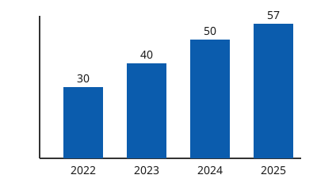

Media i obrazy
Obraz informacyjny i dekoracyjny
<!-- ✗ brak alt: czytnik odczyta nazwę pliku -->
<img src="gory.svg">
<!-- ✓ informacyjny -->
<img src="gory.svg" alt="Ośnieżony szczyt nad zielonymi zboczami w słoneczny dzień">
<!-- ✓ w linku: opisuje cel -->
<a href="/"><img src="logo.svg" alt="Strona główna"></a>
<!-- ✓ dekoracyjny -->
<img src="ozdobnik.svg" alt="">Wykres
✓ Dobrze: krótki alt i pełne dane w tabeli

Dane wykresu w tabeli
| Rok | Liczba wdrożeń |
|---|---|
| 2022 | 30 |
| 2023 | 40 |
| 2024 | 50 |
| 2025 | 57 |
Wideo z napisami i transkrypcją
Poprawny odtwarzacz zawiera ścieżkę napisów w formacie WebVTT, natywne kontrolki (bez autoplay) i transkrypcję pod nagraniem:
<video controls preload="metadata">
<source src="film.mp4" type="video/mp4">
<track kind="captions" src="napisy.vtt" srclang="pl" label="Polski" default>
<track kind="descriptions" src="audiodeskrypcja.vtt" srclang="pl" label="Audiodeskrypcja">
</video>Przykładowy plik napisów: napisy.vtt. Napisy dla osób niesłyszących zawierają także opis dźwięków, np. „[muzyka w tle]”.
Przykładowa transkrypcja
[Muzyka w tle] Lektor: „Dostępność to nie dodatek – to jakość.”
Animacja
✗ Źle: kręci się bez końca, bez możliwości zatrzymania
✓ Dobrze: przycisk pauzy i prefers-reduced-motion
@media (prefers-reduced-motion: reduce) {
* { animation-duration: 0.01ms !important; transition-duration: 0.01ms !important; }
}Włącz w systemie opcję „Ogranicz ruch” (macOS: Ustawienia → Dostępność → Monitor, Windows: Ustawienia → Dostępność → Efekty wizualne). Po przeładowaniu cały serwis przestanie animować, także zły przykład, bo globalny CSS respektuje tę preferencję.